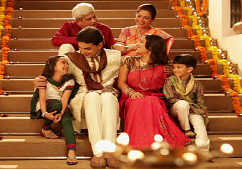
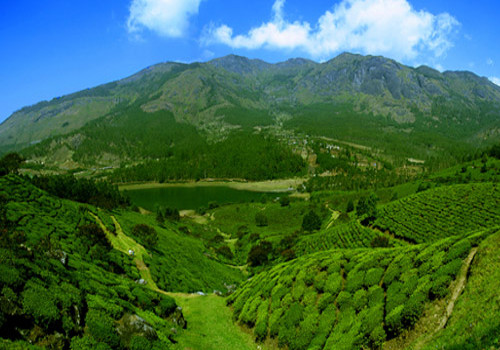
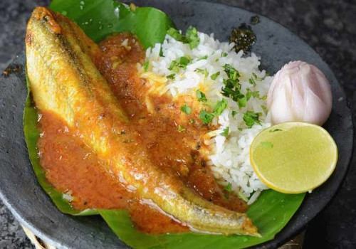

Explore Andhra
" Country is not just a land, but people and its culture "
Culture
 People from Andhra are fun loving and relaxed . Curious to put finger on every thing and very flexible personlalities, They are the good example for the proverb "when in Rome, do as the Romans do" Telugu people are very cautious about relations with others and about family values, love to being as groups than individual.
Almost of the telugu peole are art-lovers such as music,dance,embroidery making and floor patterns(Muggulu) have a long-term tradition in Andhra Pradesh and these arts are part of Telugu people's every day life.
Andhraites are very open hearted to guests or visiters and they love to help, which means they are ready to put their own work back to help others ! Most of people can communciate with english if you do not speak Telugu language.
Andhra pradesh main religion is Hinduism, but there are many other religions too. Andhra-people have great religion and culuture tollerance and live with great harmony. Andhra people are very proud of their casts, which indicates thier ancesters job-identity.
Language: People from Andhra speaks Telugu language, but they speak other languages too such as English, Urdu and Hindi to communicate with people who speaks other than Telugu
Capital city
Amaravathi is a capital city of Andhra Pradesh, and once upon a time which was an ancient capital of Sathavahana kingdom around 500 BCE,. Amaravathi means " An immortal one" and coupled with south eastern banks of river Krishna.
Amaravathis is one of the places to walk through ancient architecture and to see ancient monuments from 100 BCE - 250 CE. You can walk through Pujari street to see 200 years past old buildings. To know history about Andhra click here Andhra official website
Emblem Poorna kumbam(Auspisious pot)
Currency: Indian Rupees(INR)
Major Industry: Agriculture, textile, poultry and auto mobile.
Major production: Rice, chillies, milk, oilseeds, food grains, millets and seafood.
Transport: Public-transport are Buses, trains, auto-rikshas and taxis, domestic-flights and Some places you can hire bycykles also on hours base.
Food
If you come to food , there are plenty of food varieties available from authentic to western food in restaurents, Andhra cuisine offers various of both vegetarian and non-vegetarian. Telugu people are food lovers, you can find why when you taste once!
Sea-food is popular of Coastal Andhra. Typical Andhra pradesh cuisine starts with vegitable-curries, vegitable-leaf-curries blended with lentils or beans or sea-food-curries or roasted-sea-food with base of boiled rice or boild millets or flat wheet or millet-breads. Weekend specials are always filled with chicken or mutton Varities.
Must try authentic food: Fish curry called Bommidaila pulusu in Nellore district, Seelavathi fish curry at east Godavari district,
Any ware in Andhra: Masaladosa(pan-cake), Ghee-dosa(pan-cake), Pesarattu(pancake),Pongali(rice blended with beans),
Religion
Although Hindu religion is main in Andhra pradesh, there are many other religions such as Muslims, Christians, Jain etc., live together with great harmony and celebrate festivals together.
"Nature is not just to visit, but it is your home"
We will wonder, if nature of Andhra Pradesh is a little master piece of earth's landscape! and you will surprise her visible emotions as high mountains and with lush green deep vallies. Do not miss to visit Kailasagiri, Lambasingi, Araku valley and Ananthagiri hills and many more are wonderfull cool places to enjoy summer seasons.
Eastern-Andhra's landscape covered with beautiful long scenic beaches and you can enjoy memorable sunrises and luke warm baths here. Western-Andhra ladscape covers with high mountains and rocks where you can see panoramic views to vallies and beaches.
From southern to central Andhra's landscape covered with lush green rice paddy-fields confuse us as if she is wearing green and golden colour sari all around the year, Yes that is true! Her rich fertilized soil allow to farm 3 crops per year.. So it is always appears green aor golden coloured fields.

Endless stretching of rock formations and cliffs are challeng you every where in Andhra , but give you confidence once you start to climb.Good to test your climbing or hiking skills and to enjoy beautiful sceneries from Gandikota rocks, Orvakal rocks and Nagalapuram rocks..many more. Take a long walks or hikes along the georges and rocks, You are always rewarded with beautiful cascading waterfalls and refreshing pools by nature !
Rivers ...rivers...You teach us how to sing and what is rythm...and how to pass obstacles to move forward in life! Andhra blessed with precious rivers with deltas with rich soil suitable for farming .
Oh! do not miss to see the meeting point of Ocean and rivers such as Godavari, Krishna ...and many more small rivers also...!
Andhra is an another home for enchanting backwaters and also home for huge salt-water lakes with mangrove-forests which are birth places for migrant birds from europe.
What is missing in andhra landscape ? Glasier only :)
Here you can experience the wilderness of Andhra by her deep forests with flora and fauna. Nature with caves another exciting expenreince where you can see rock arts in caves tells the stories of inhabitants culture. There are deep cave passages too ...if you are curious to explore underground world.
The monment we step in nature, we realize that what we are missing everday of our life by living in materialic world! Long coastal golden coloured sand beaches mesmerize us
Scenic sunrise on beaches
" Flora and fauna bla..bla..."
Here, we can find exotic wild-life here in deep forests and you can find pristine life
Animal ruled world, red-faced monkeys, trees with bats,It is a land of India in rich in history, heritage and diversity"
"Facts about Andhrapradesh "
About
Andhra..,She is so beautiful land with green mountains, low valleys, rivers, lakes and sun kissed golden colour sand beaches and she is so intelligent to keep balanced nature and and climate. Andhra is bonded with bengal east coastline more than 900 km to the east. More than 49 million souls living Andhra and has an average population density of 308 inhabitants per square kilometer. Anhdhra borders the states of Tamil Nadu to the south east, Karnataka to the west, Telangana to the north and Odisha to the north east.
Manners
Telugu people use right hand finger tips to eat in general same as rest of south India, but in restaurants food served together with cutlery. People wash their hands before and after eating. It is improtant tradition in Andhra to offer food, even to an unexpected visitor:) You are expected to visit without any appointment in tea-time between 4:00pm and 7:00pm as visitors time. It is common to people in Andhra cuddle or caress or give candies to kids without their parents permission. People are very happy to help and please you if you ask any help, and even they put their work aside and follow you to help. It is not polite to smoke or drink beer etc., while woman and kids around you. Nudity or bikinis are not permitted in beaches, if you are woman wear t-shirt and shorts and if you are man then, ware short is enough in public beaches.
Traditions
Spirituality is high in Andhra Pradesh and most of the telugu people's day starts with prayers or rituals to God(s) before their start of daily activities and jobs.Poorna Kumbham (Source of Life)